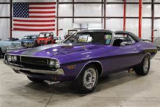
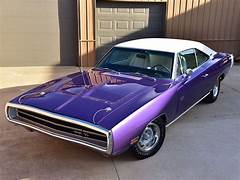
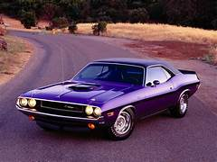

dodge charger de 1970
ficha tecnica

O Dodge Charger 1970 era equipado com motores V8 a gasolina, com várias opções que iam desde cerca de 5.2L até 7.0L (426 HEMI), com potência variando aproximadamente de 230 cv até mais de 400 cv nas versões mais potentes. Possuía tração traseira e podia vir com câmbio manual de 3 ou 4 marchas, além de opção automática.Sua velocidade máxima ficava em torno de 180 a 220 km/h, dependendo da motorização. O modelo era oferecido principalmente na carroceria cupê de 2 portas, com design esportivo e agressivo.Entre as características gerais, contava com direção mecânica (com opção de direção hidráulica), freios a tambor (com discos dianteiros em algumas versões) e suspensão reforçada, voltada para desempenho, o que o tornava um dos muscle cars mais potentes e icônicos da época.
historia

O Dodge Charger 1970 era equipado com motores V8 a gasolina, com várias opções que iam desde cerca de 5.2L até 7.0L (426 HEMI), com potência variando aproximadamente de 230 cv até mais de 400 cv nas versões mais potentes. Possuía tração traseira e podia vir com câmbio manual de 3 ou 4 marchas, além de opção automática.Sua velocidade máxima ficava em torno de 180 a 220 km/h, dependendo da motorização. O modelo era oferecido principalmente na carroceria cupê de 2 portas, com design esportivo e agressivo.Entre as características gerais, contava com direção mecânica (com opção de direção hidráulica), freios a tambor (com discos dianteiros em algumas versões) e suspensão reforçada, voltada para desempenho, o que o tornava um dos muscle cars mais potentes e icônicos da época.
curiosidades

O Dodge Charger 1970 possui várias curiosidades interessantes. Ele é considerado um dos maiores ícones da era dos muscle cars americanos, principalmente pelas versões com motores extremamente potentes, como o famoso 426 HEMI.Uma curiosidade marcante é que o modelo ficou muito conhecido na cultura popular, aparecendo em filmes e séries, o que ajudou a aumentar ainda mais sua fama ao longo dos anos. Seu design agressivo, com linhas fortes e esportivas, também contribuiu para torná-lo um dos carros mais reconhecidos da época.Além disso, o Charger 1970 é muito valorizado por colecionadores atualmente, especialmente nas versões mais raras e potentes, que podem atingir preços elevados. Outro ponto curioso é o ronco característico do motor V8, que se tornou uma das marcas registradas desse modelo clássico.
voltar a pagina inicial